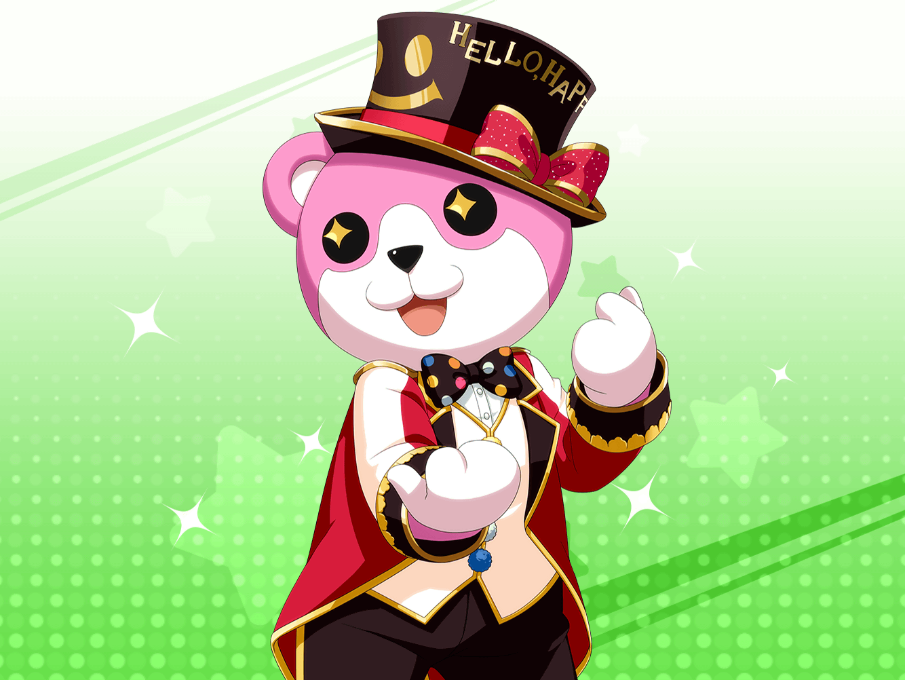

CiRCLE ロビー
美咲
はぁ……もうヘトヘト……
少し休憩してから帰ろう……
美咲
あれ……？
{{userName}}さん、お疲れさまです。
ええ、見ての通りあたしはかなり疲れてますよ……
美咲
いつものスタジオ練習になるはずだったんですけど……
今日はちょっと違ったんですよ
美咲
あたしたち、今マジックの練習もしてて……
今日は演奏しながらマジックを披露してみようなんて
こころが言い出したんです
美咲
それだけならまだよかったんですけど、
そのうちこころの演出要望がエスカレートしていって……
美咲
ミッシェル着たままでジャンプさせられたり
前転させられたりして体力の限界を迎えちゃいました
美咲
あはは……そうですよね、マジックなのになんで
ジャンプするんだよって話ですよね
美咲
あたしも思ったんですけど、
こころっていうかハロハピメンバーの考えって、
何がどうなるかわからないじゃないですか
美咲
あたしがジャンプしたり前転したりすることで、
こころやはぐみが楽しいことを思いついたり
薫さんがマジックの仕掛けを思いつくかもしれない
美咲
みんなが、世界を笑顔にするヒントを
得られるかもしれないんじゃないのかなって
美咲
だったらあたしは、自分ができることなら多少疲れることでも
受け入れて、世界を笑顔にするきっかけをこころ達に
与えていきたいな……って
美咲
……って、あたし、だいぶこころに毒されてますよね。
前のあたしだったら、ミッシェルのジャンプは
無駄なことだって思って、きっとやりませんでしたよ
美咲
毒されてる……とは少し違うのかな。
自分でも納得してやってるわけだし……
美咲
……すみません、
疲れすぎて思考がおかしくなってたみたいです。
ちょっと、本音を言いすぎましたね
美咲
あ、あの……さっきあたしが言ったこと、
こころ達には話さないでもらってもいいですか？
美咲
な、なんていうか恥ずかしいじゃないですか……
こういうこと、メンバーの前じゃあまり口にしないですから
美咲
それに、さっきの言葉をこころ達が聞いたら
もっとすごいことをミッシェルにさせそうですし……
美咲
……ま、それでハロハピの合言葉、世界を笑顔にが
実現できるならおやすいものだけど
美咲
さーって、ここで休憩してたら
帰るぐらいの体力は回復しました
美咲
そういうわけなんで、失礼しますね。
それじゃあ、また